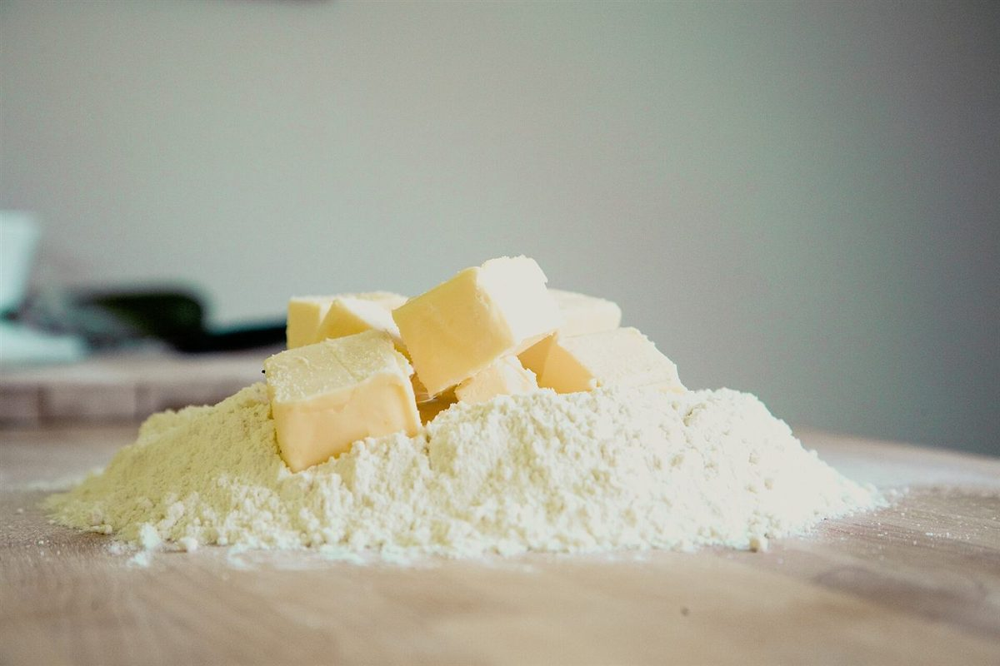

店のこと
確定稿と、校正中のところ
お店について確認できているのは、所在地とInstagramのアカウントだけです。
このページの「想像してみる」部分は、制作側が想像して書いたものです。お店の実際の様子・考え・メニューとは関係がありません。
確定稿確認できていること
- 店名は「フィーカ ベーカリー」、業種はパン屋
- 所在地は長崎県平戸市崎方町７６１(〒859-5104)
- 電話番号はなし。連絡はInstagramから
- Instagramのアカウントは @fikabakery0222
校正中まだ確認できていないこと
- 営業時間・定休日
- メニュー・価格
- ご予約・駐車場

想像してみる
「フィーカ」という名前から
由来は分かりません。制作側は、手を止めてひと息つく時間を思い浮かべました。パンを焼く仕事の合間にも、そんな時間があるのかもしれない、という想像です(実際のお店の姿ではありません)。
下の写真はパンのイメージを伝えるためのフリー素材で、お店で扱っているものではありません。

